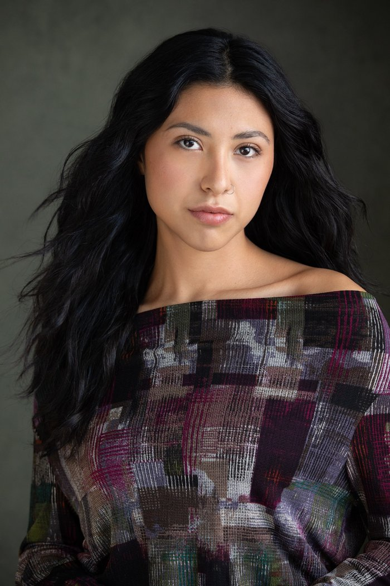

Denisse Ponce
Actor — Toronto, ON
Height: 5' 5" · Eyes: Dark Brown · Hair: Black · Non-Union
denisseponce110@gmail.com · 437-604-7712
Theatre
| The Rocky Horror Picture Show | Ensemble | Artestudio — Dir. Rafa Maza / Fernanda Aldaz |
| Grease | Ensemble | Artestudio — Dir. Rafa Maza / Fernanda Aldaz |
| Between the Sheets (scene study) | Teresa | Toronto Film School — Dir. Tanya Rintoul |
| How Am I Alive? (scene study) | Dorothy | Toronto Film School — Dir. Andrew Moodie |
| Our Country Is Good (mini play) | Ketch Freeman | Toronto Film School — Dir. Catherine McNally |
| Party Time | Liz | Toronto Film School — Dir. Aaron Willis |
Film / TV
| Invisible Marks (short film) | Featured | Dir. Barkai Ben-Yakar |
| Ten Lords A-leaping (short film) | Featured | Dir. Camryn Anderson |
| The Visitant (short film) | Lead | Dir. Isabelle Gauthier LeBlanc |
| Calaverita a la Muerte (short film) | Lead | Dir. Luis Armando Pacheco Larrea |
| Melting Clock (short film) | Lead | Dir. Gaviota Olivera |
| The Appraiser (short film) | Bit Part | Dir. Camryn Anderson |
Commercials
| Amazon | Featured | Tara Leinwohi |
Education
| Acting for Theatre, Film & Television Diploma | Toronto Film School |
Special Skills & Training
Acting 1, Tanya Rintoul; Camera Acting 1, Ingrid Hart; Auditioning for Camera, Christopher Jacot; Improvisation 4, The Second City; Camera Acting 2, Julia Paton; Movement 3 Clown & Physical Theatre, Andy Massingham; Acting 3, Catherine McNally; Voice 2, Peter Van Wart; Acting 4: Improvisation & Musical Improv, Jack Mosshammer; Voiceover, Matthew McDonald; Owning the Room, Intensive at Tarragon Theatre; Contemporary Dance (Intermediate), The Underground Dance Centre; Reggaeton Dance (Intermediate), The Underground Dance Centre; Intermediate Ballet, The Fifth Dance; Flexibility, Intermediate; Singing Skills (Soprano, beginner); Spanish Language, Native; English Language, fluent.